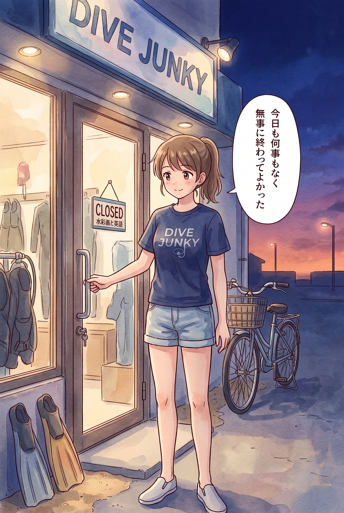

The road Orz passed by 2026 年 08 月
08 月 19 日 ( 水 )
Dive #203 Diving ALBA
千葉にある架空の町鯱田市にあるダイビングショップ「アルバ」で働く 4 人の女性の日常を描いているそうだ。最初に見つけたのが上のストーリー。
ぱらっと見たら「割と知った顔が多いファンダイブはやっぱりラクだ」なんて独り言を言ってる。
この正直者め。でもそれはゲストの前で言うなよ？ と笑えた。
ラストの「何も変わらないって、本当はとても貴重で奇跡。何も変わらない明日に感謝」は本当にそうで、何事もなくその日の仕事が終わったら本当にほっとする。

ダイビングショップやダイビングサービスにとって何も起きないのが日常だから。
もしもゲストが事故を起こしたら、一瞬でダイビングショップ、ダイビングサービスにとっての日常は壊れてしまう。
世の中には、この仕事のことを何も知らないために、ダイビングショップやダイビングサービスが事故に巻き込まれることは日常だと、そのように思っている人がいる。
そんなはずがない。
ぼくらは医療従事者ではないから人の命にかかわるシビアな状況に直面することはほとんどない。
でもぼくらはそのシビアな状況があり得ることを知っている。ヒヤリハットもたしかに日常だ。
他の地域や、他のショップで何が起きたのか。そしてその後、関係する人たちの誰もが、どう壊れていったのかも知っている。
そしてぼくたちは海がどういう場所なのかを知っている。
海はどうしても人が生きられる場所ではない。
だから何事もなく一日が終わると、本当にホッとする。
何も起きなくてよかった、って。
【17:52 追記】
今日の更新分まで全部読んだ。鼻をずるずるさせながら。そうか、そうだったのか、って。
気になっているのはやはり 4 人が何を探しているのかってこと。
たぶん探しているその何かが 4 人が自分たちを「家族」と呼んでいることにもつながってきそう。そして見つけたらダイビングの仕事をやめるかもしれないと 4 人のうち 1 人が言っていること。
その何かを見つけたら彼女にとってダイビングはその役割を終えるんだろう。
そして最初から通しで読んで、さっき取り上げた昨日の更新分の最後の行「何も変わらないって、本当はとても貴重で奇跡。何も変わらない明日に感謝」の意味が全く変わってしまった。
「何も変わらない明日」の質量が全く変わってしまった。
それはぼくが 31 のときにもっと西の地方で同じ経験を地域のみんなとしてしまっていたから。
- Category :
- #Records of Orz's Road
- #ダイビング
- #スクーバダイビング
- #ダイビングショップアルバ
- #日記